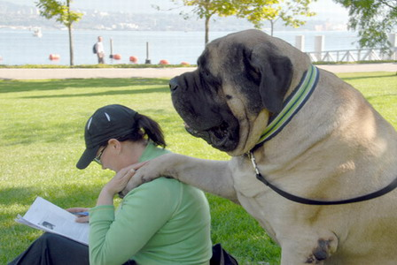

Pet Channel
| บูลมาสทีฟฟ์ (Bullmastiff) |
|  |
ลักษณะทั่วไป แค่เห็นหน้าก็คงไม่มีใครกล้าแหยมกับบูลมาสทีฟฟ์เป็นแน่ เพราะด้วยส่วนสูง 25 – 27 นิ้ว และน้ำหนัก 110 – 130 ปอนด์ แถมหน้าตาที่ย่น ดูเคร่งขรึม หน้าโหดไม่ใช่เล่น แต่ถ้าได้ทำความรู้จักกับพวกเขาจะรู้เลยว่า พวกเขาช่างไร้เดียงสา อ่อนหวาน น่ารัก รักเจ้าของ ขี้อ้อน ชื่นชอบการทำความรู้จักกับคนแปลกหน้าแม้จะเล่นแรงบ้างก็ตามค่ะ แต่ถึงเวลาต้องปกป้องครอบครัวพวกเขาก็จะฮึกเหิม พร้อมลุกขึ้นต่อสู้เพื่อคนที่รักในทันที บูลมาสทีฟฟ์เป็นน้องหมาฝึกง่าย แต่อาจต้องฝึกตั้งแต่ยังเล็กประมาณ 8 – 12 สัปดาห์ พาไปออกสังคมบ่อย ๆ จะได้ชินกับคนแปลกหน้า รู้จักควบคุมตัวเองเมื่อตื่นเต้น เพราะตัวใหญ่มาก ถ้าไม่หัดฝึกให้รู้จักหยุด คอย ยั้งแรงตั้งแต่ยังเด็ก พอโตมาเจ้าของอาจจะรั้งไว้ไม่อยู่ แล้วถ้าเพื่อน ๆ คนไหนคิดจะเลี้ยงควรวางแผน และศึกษาการเลี้ยงดูตั้งแต่เนิ่น ๆ |